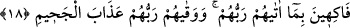
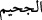
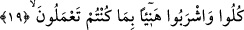

tahsis, bu vehmi ortadan kaldırmak için yapılmıştır.
Kâmus’ta nâtur kelimesinin, üzüm ve hurma bahçesinin bekçisi/rençberi anlamında
Arapça olmayan bir kelime olduğu beyân edilir. Yüce Allah’ın cennâttan sonra na’îm
kelimesini getirmesinin sebebi, muttakîlerin orada bekçi veya işçiler gibi değil de
bahçenin içerisinde yayılmış, serbestçe nimetlenen, bizzat o bahçenin sâhibi konumunda
bulunduğunu vurgulamak içindir.
18. Rablerinin kendilerine verdikleriyle sevinirler. (Zira) Rableri onları,
cehennem azabından korumuştur.
“Sevinirler”, nimetlere dalıp telezzüz ederler, mutluluk bulurlar.
Kâmus’ta fâkih, meyve sâhibine verilen addır. Yine gönlü rahat olana “dahûk” ve
rahat yaşantı içinde olana da “nâim” adı verildiği bu eserde geçmektedir. Rahat yaşantı
içinde olan kadına da “nâime” ve “münaame” adı verilmektedir.
“Rablerinin kendilerine verdikleriyle” nâil oldukları ebedî ikram ve güzelliklerle
“sevinirler.”
Fethu’r- Rahman’da “Rablerinin kendilerine verdiği şeyler”den maksadın, nimetler
ve O’nun rızâsı olduğu beyân edilir. Buna sebep olarak da şu îzâh getirilir: Bazen
nimetlendirilen kişi her ne kadar zâhirî nimetlere gark olunsa da kalben başka şeylerle
meşgul olabilir. Fakat âyette fâkihîn kelimesinin getirilmesi; onların mahzâ sevinç, safâ
ve telezzüz içinde bulunduklarını, nimetlerden açlık veya susuzluklarını yatıştırmak için
değil de bizzat bedenen ve kalben mutmain bir biçimde faydalandıklarını beyân etmeye
matuftur.
“Rableri onları cehennem azabından korumuştur.” “Vikaye”, bir şeyi kendisine
eziyet ve zarar veren şeyden korumaktır. “Cuhme” ise cehennem ateşinin tutuşma
şiddetidir ki bu fiilden isim olarak
(cahîm) türetilmiştir. Bu da cehennemin
isimlerinden biridir. Bu cümle, “Onlar, Rablerinin kendilerine nimetler vermesi ve
onları cehennem azabından koruması sebebiyle mütelezziz olurlar” şeklindedir.
Âyette Rabbuhum buyrularak “Rab” kelimesinin zamir şeklinde getirilmeyip açıkça
belirtilmesinin sebebi de teşrif ve ta’lîl içindir.
19. Onlara: “Yaptıklarınıza karşılık âfiyetle yeyin, için” (denilir).
Yâni onlara cennetin bekçileri tarafından dâimî olarak “istediğiniz gibi âfiyetle yiyin,